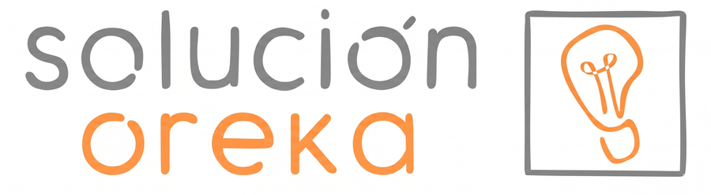
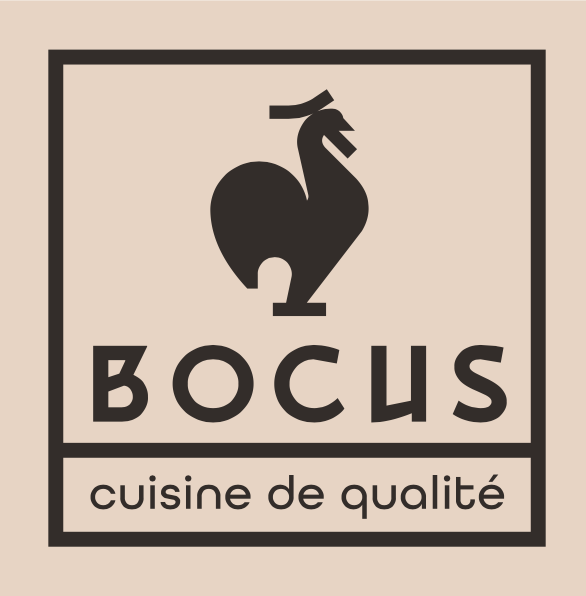
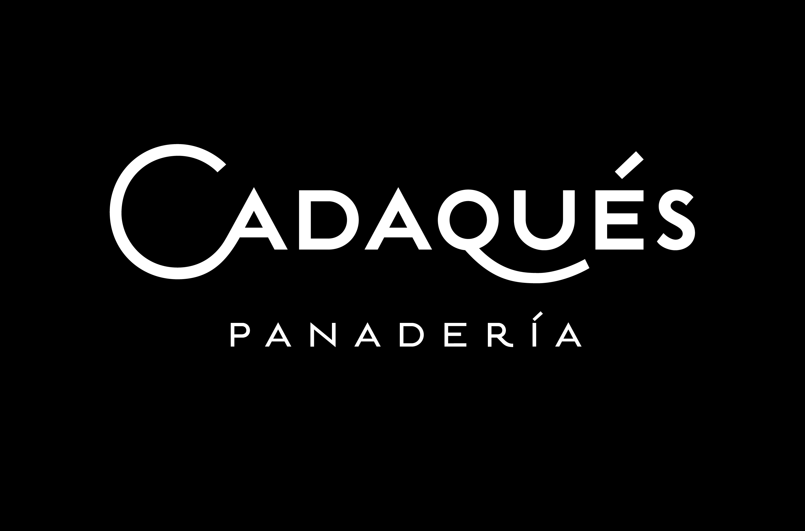

Ingenieria de menu
Cartas pensadas desde margen, identidad, produccion y experiencia de cliente.

Consultoria en gestion gastronomica
Diseñamos, ordenamos y escalamos proyectos gastronomicos con una mirada integral: cocina, operacion, costos, layout, tecnologia, canales digitales y experiencia de cliente.
Servicios
Cartas pensadas desde margen, identidad, produccion y experiencia de cliente.
Cocinas, produccion, despacho y servicio diseñados para trabajar mejor.
Fichas, protocolos y controles para sostener calidad cuando el negocio crece.
Canales digitales, delivery, pagos, logistica y venta online con operacion realista.
Metodo Oreka
Marcas propias
Bocus y Cadaques son laboratorios vivos del metodo Oreka: marcas creadas desde el diseño operativo, la estandarizacion y los canales digitales.

Delivery premium online, estandarizado desde el inicio y diseñado con margen, produccion y experiencia digital en la misma mesa.
www.bocus.cl
Panaderia de barrio con pan europeo, fermentacion lenta, horno visible y evolucion hacia e-commerce y canales de delivery.
Experiencia
Don Carlos y Don Clan: procesos, layout, identidad, menu y concepto.
La Campina y Raval: layout, alta rotacion, cocina y delivery simultaneo.
La Bodeguita de Miguel Torres: producto y carta junto al Chef Patricio Rosas.
Tienda Mundo Rural / INDAP: e-commerce para agricultura familiar y logistica rural.
Equipo
Academia del Queso
Un espacio editorial para transformar material de cursos en fichas, guias y contenido util sobre origen, maduracion, cata y maridaje.
Comte AOP, terroir del Jura, Fort Saint-Antoine y affinage lento.
Frescos, corteza florecida, corteza lavada, prensados y persillados.
Origen, corteza blanca, textura cremosa, cata y maridaje.
Contacto